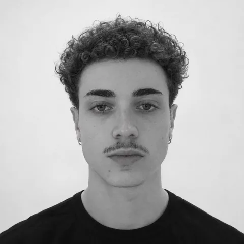
Eu transformo processo manual em ferramenta.
Construo apps e automações com IA, o que muita gente chama de vibe coding. Começo por problemas pequenos e reais: o recibo de um piscineiro, a roupa que eu esperava baixar de preço, a rega de uma horta.
Escolher um projetoCada um nasceu de uma dor real. Abra para ver a história.
Antes do código, já era isso que eu fazia.
Estágio técnico em meio ambiente
Louveira, SP
ago/2021 – fev/2023 · 1 ano e 7 meses
Estudo Engenharia Agrícola na Unicamp. Em julho de 2026 percebi que o que eu mais gosto de fazer é o que eu já fazia na P&G: olhar para um processo que dá trabalho e transformar em ferramenta.
Eu já tinha começado a construir com IA depois de uma palestra sobre o Gemini na Unicamp: era o mesmo trabalho da P&G, agora sem os limites das ferramentas low-code. Hoje aprendo testando: defino as regras, testo cada uma e corrijo quando a ferramenta erra.
Aprendi os princípios de programação numa matéria de Python na Unicamp, resolvendo problemas com código. Em julho comecei a estudar por conta própria: terminei HTML no freeCodeCamp e agora estou em CSS. Também estudo o código dos meus próprios projetos para entender como ele funciona.
O que eu mais gosto é construir o produto inteiro: a tela que a pessoa usa e a lógica, os dados e as automações por trás.
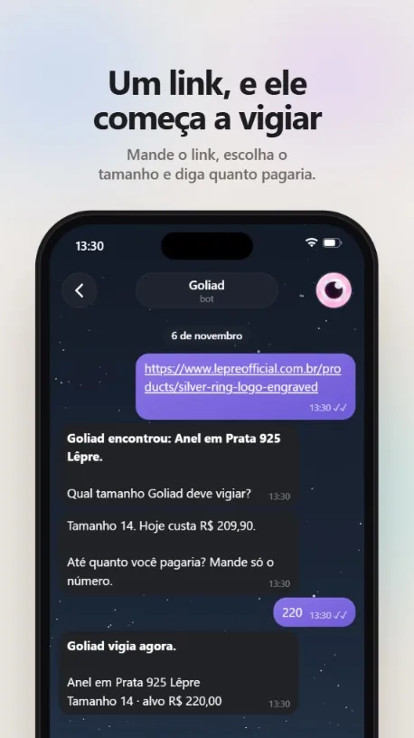
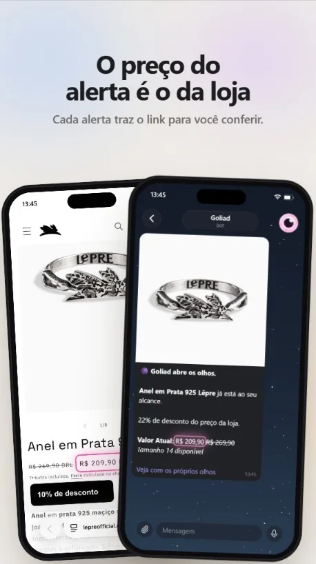
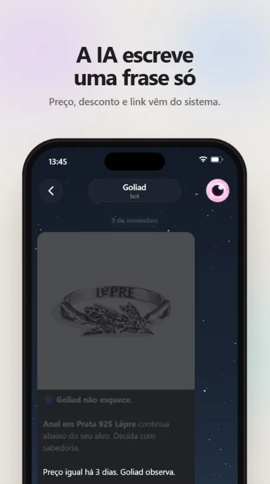
Monitor de preços com IA, no Telegram.
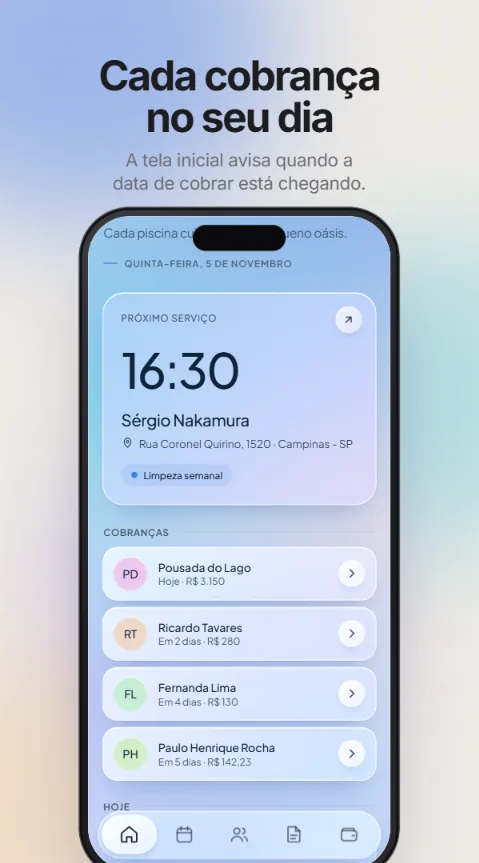
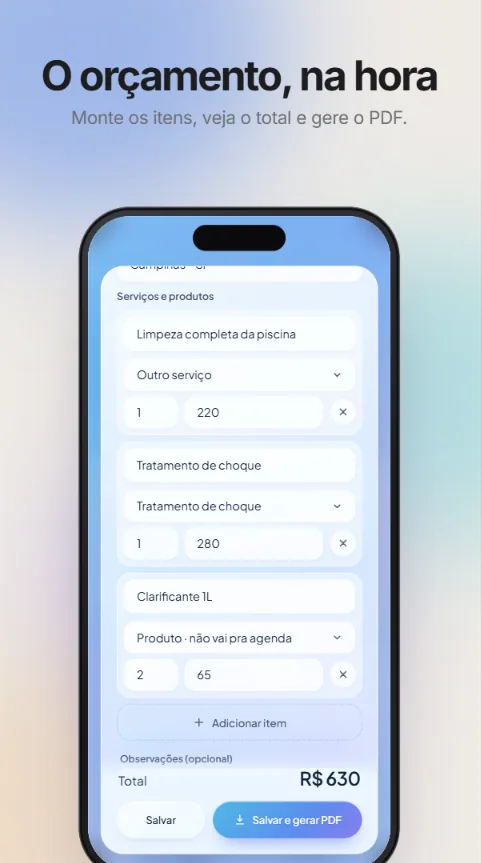
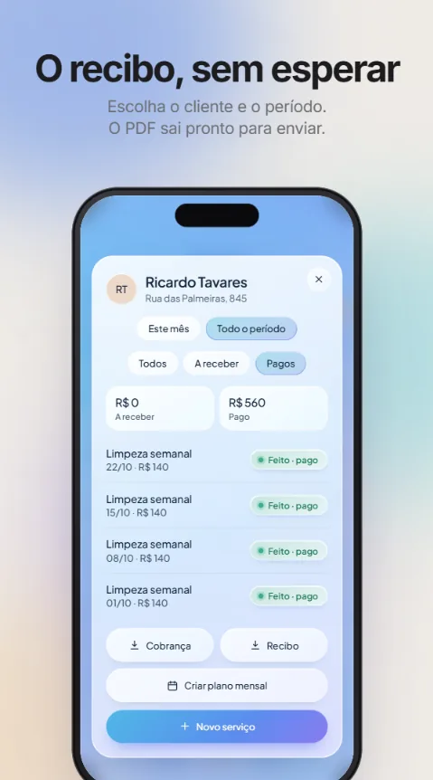
Gestão para piscineiros.
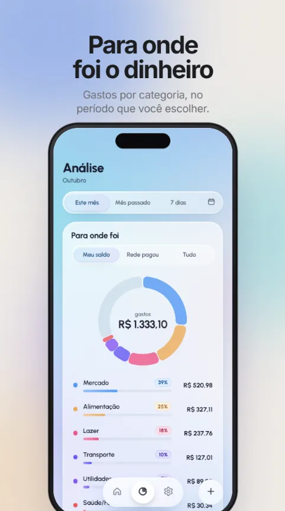
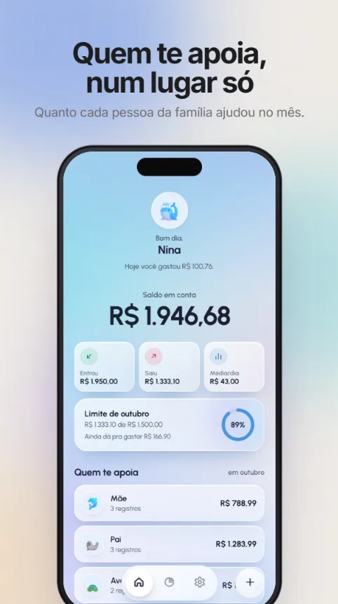
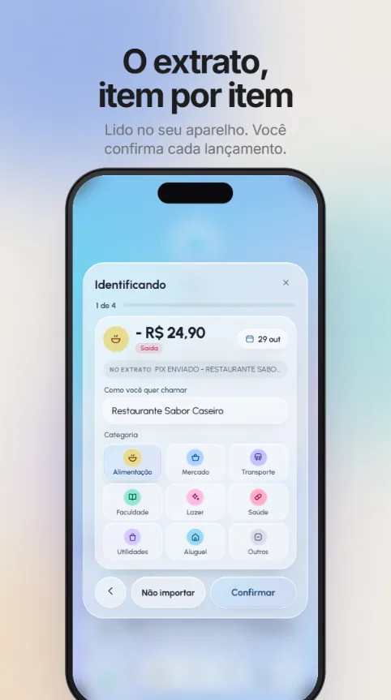
Controle financeiro pessoal.
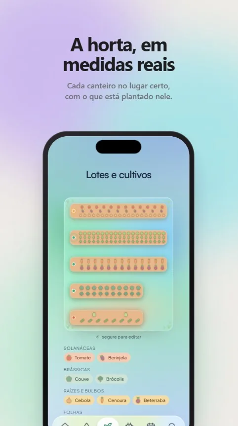
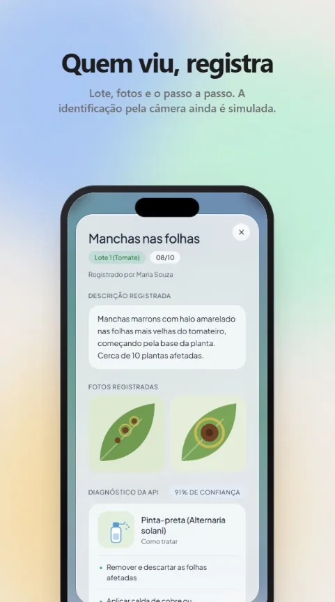
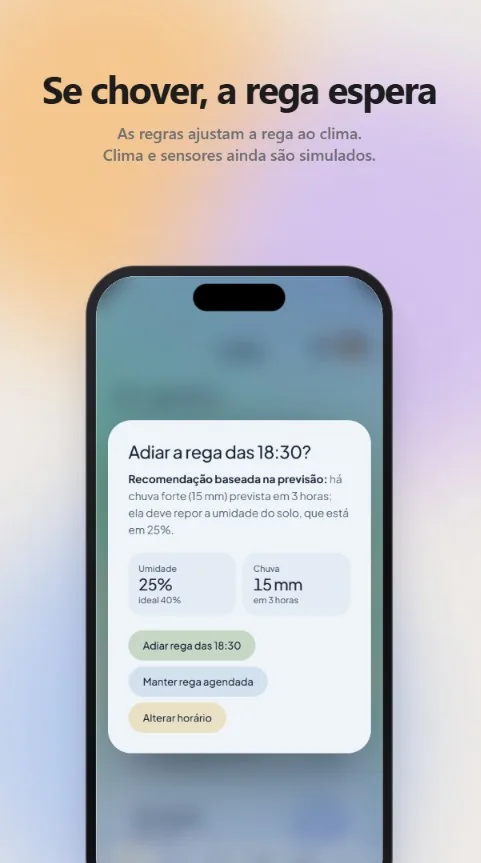
Assistência ao cultivo de hortas urbanas.
Eles cuidam do que tem raiz; eu cuido do que tem tela.